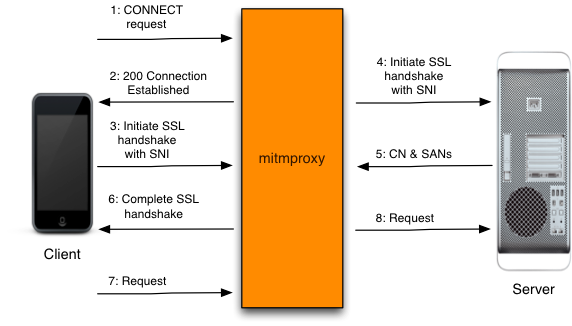
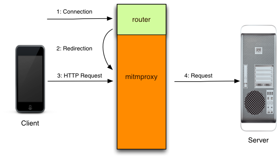

GET http://example.com/index.html HTTP/1.1This is a proxy GET request - an extended form of the vanilla HTTP GET request that includes a schema and host specification, and it includes all the information mitmproxy needs to proceed.

| 1 | The client connects to the proxy and makes a request. |
| 2 | Mitmproxy connects to the upstream server and simply forwards the request on. |
CONNECT example.com:443 HTTP/1.1A conventional proxy can neither view nor manipulate an SSL-encrypted data stream, so a CONNECT request simply asks the proxy to open a pipe between the client and server. The proxy here is just a facilitator - it blindly forwards data in both directions without knowing anything about the contents. The negotiation of the SSL connection happens over this pipe, and the subsequent flow of requests and responses are completely opaque to the proxy. ## The MITM in mitmproxy This is where mitmproxy's fundamental trick comes into play. The MITM in its name stands for Man-In-The-Middle - a reference to the process we use to intercept and interfere with these theoretically opaque data streams. The basic idea is to pretend to be the server to the client, and pretend to be the client to the server, while we sit in the middle decoding traffic from both sides. The tricky part is that the [Certificate Authority](http://en.wikipedia.org/wiki/Certificate_authority) system is designed to prevent exactly this attack, by allowing a trusted third-party to cryptographically sign a server's SSL certificates to verify that they are legit. If this signature doesn't match or is from a non-trusted party, a secure client will simply drop the connection and refuse to proceed. Despite the many shortcomings of the CA system as it exists today, this is usually fatal to attempts to MITM an SSL connection for analysis. Our answer to this conundrum is to become a trusted Certificate Authority ourselves. Mitmproxy includes a full CA implementation that generates interception certificates on the fly. To get the client to trust these certificates, we [register mitmproxy as a trusted CA with the device manually](@!urlTo("certinstall.html")!@). ## Complication 1: What's the remote hostname? To proceed with this plan, we need to know the domain name to use in the interception certificate - the client will verify that the certificate is for the domain it's connecting to, and abort if this is not the case. At first blush, it seems that the CONNECT request above gives us all we need - in this example, both of these values are "example.com". But what if the client had initiated the connection as follows:
CONNECT 10.1.1.1:443 HTTP/1.1Using the IP address is perfectly legitimate because it gives us enough information to initiate the pipe, even though it doesn't reveal the remote hostname. Mitmproxy has a cunning mechanism that smooths this over - [upstream certificate sniffing](@!urlTo("features/upstreamcerts.html")!@). As soon as we see the CONNECT request, we pause the client part of the conversation, and initiate a simultaneous connection to the server. We complete the SSL handshake with the server, and inspect the certificates it used. Now, we use the Common Name in the upstream SSL certificates to generate the dummy certificate for the client. Voila, we have the correct hostname to present to the client, even if it was never specified. ## Complication 2: Subject Alternative Name Enter the next complication. Sometimes, the certificate Common Name is not, in fact, the hostname that the client is connecting to. This is because of the optional [Subject Alternative Name](http://en.wikipedia.org/wiki/SubjectAltName) field in the SSL certificate that allows an arbitrary number of alternative domains to be specified. If the expected domain matches any of these, the client will proceed, even though the domain doesn't match the certificate Common Name. The answer here is simple: when extract the CN from the upstream cert, we also extract the SANs, and add them to the generated dummy certificate. ## Complication 3: Server Name Indication One of the big limitations of vanilla SSL is that each certificate requires its own IP address. This means that you couldn't do virtual hosting where multiple domains with independent certificates share the same IP address. In a world with a rapidly shrinking IPv4 address pool this is a problem, and we have a solution in the form of the [Server Name Indication](http://en.wikipedia.org/wiki/Server_Name_Indication) extension to the SSL and TLS protocols. This lets the client specify the remote server name at the start of the SSL handshake, which then lets the server select the right certificate to complete the process. SNI breaks our upstream certificate sniffing process, because when we connect without using SNI, we get served a default certificate that may have nothing to do with the certificate expected by the client. The solution is another tricky complication to the client connection process. After the client connects, we allow the SSL handshake to continue until just _after_ the SNI value has been passed to us. Now we can pause the conversation, and initiate an upstream connection using the correct SNI value, which then serves us the correct upstream certificate, from which we can extract the expected CN and SANs. There's another wrinkle here. Due to a limitation of the SSL library mitmproxy uses, we can't detect that a connection _hasn't_ sent an SNI request until it's too late for upstream certificate sniffing. In practice, we therefore make a vanilla SSL connection upstream to sniff non-SNI certificates, and then discard the connection if the client sends an SNI notification. If you're watching your traffic with a packet sniffer, you'll see two connections to the server when an SNI request is made, the first of which is immediately closed after the SSL handshake. Luckily, this is almost never an issue in practice. ## Putting it all together Lets put all of this together into the complete explicitly proxied HTTPS flow. 
| 1 | The client makes a connection to mitmproxy, and issues an HTTP CONNECT request. |
| 2 | Mitmproxy responds with a 200 Connection Established, as if it has set up the CONNECT pipe. |
| 3 | The client believes it's talking to the remote server, and initiates the SSL connection. It uses SNI to indicate the hostname it is connecting to. |
| 4 | Mitmproxy connects to the server, and establishes an SSL connection using the SNI hostname indicated by the client. |
| 5 | The server responds with the matching SSL certificate, which contains the CN and SAN values needed to generate the interception certificate. |
| 6 | Mitmproxy generates the interception cert, and continues the client SSL handshake paused in step 3. |
| 7 | The client sends the request over the established SSL connection. |
| 7 | Mitmproxy passes the request on to the server over the SSL connection initiated in step 4. |
GET /index.html HTTP/1.1Note that this request differs from the explicit proxy variation, in that it omits the scheme and hostname. How, then, do we know which upstream host to forward the request to? The routing mechanism that has performed the redirection keeps track of the original destination for us. Each routing mechanism has a different way of exposing this data, so this introduces the second component required for working transparent proxying: a host module that knows how to retrieve the original destination address from the router. In mitmproxy, this takes the form of a built-in set of [modules](https://github.com/mitmproxy/mitmproxy/tree/master/libmproxy/platform) that know how to talk to each platform's redirection mechanism. Once we have this information, the process is fairly straight-forward. 
| 1 | The client makes a connection to the server. |
| 2 | The router redirects the connection to mitmproxy, which is typically listening on a local port of the same host. Mitmproxy then consults the routing mechanism to establish what the original destination was. |
| 3 | Now, we simply read the client's request... |
| 4 | ... and forward it upstream. |
| 1 | The client makes a connection to the server. |
| 2 | The router redirects the connection to mitmproxy, which is typically listening on a local port of the same host. Mitmproxy then consults the routing mechanism to establish what the original destination was. |
| 3 | The client believes it's talking to the remote server, and initiates the SSL connection. It uses SNI to indicate the hostname it is connecting to. |
| 4 | Mitmproxy connects to the server, and establishes an SSL connection using the SNI hostname indicated by the client. |
| 5 | The server responds with the matching SSL certificate, which contains the CN and SAN values needed to generate the interception certificate. |
| 6 | Mitmproxy generates the interception cert, and continues the client SSL handshake paused in step 3. |
| 7 | The client sends the request over the established SSL connection. |
| 7 | Mitmproxy passes the request on to the server over the SSL connection initiated in step 4. |